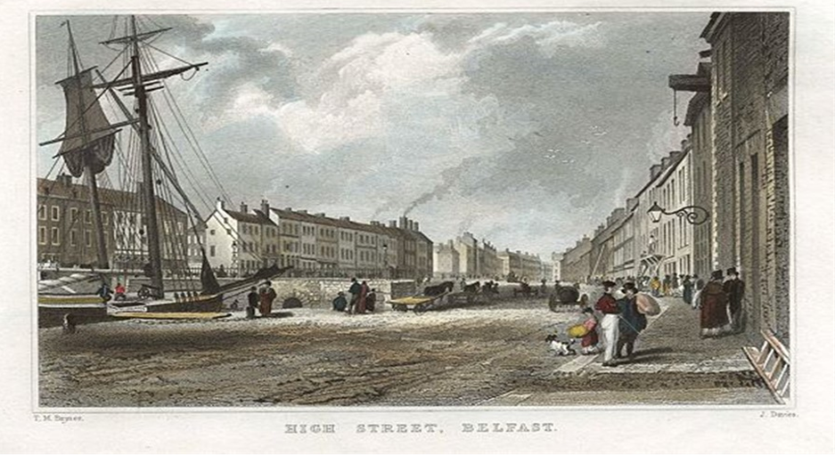
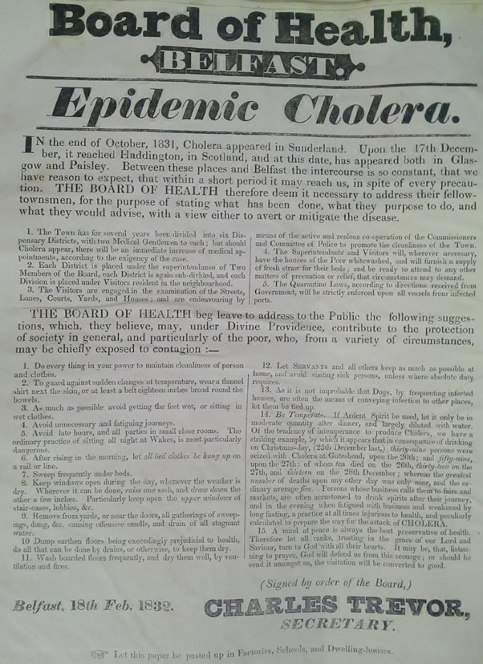

Cholera in Nineteenth-Century Belfast
Examining disease transmission, mortality, and the evolving public health response
Introduction
As Ireland's only major industrialised town, Victorian Belfast was outwardly prosperous for much of the period and displayed a marked sense of civic pride. In 1842, the English novelist William Makepeace Thackeray described it as appearing "hearty, thriving and prosperous, as if it had money in its pocket and roast beef for dinner." Yet, like many rapidly growing industrial towns, this image of prosperity concealed an urban infrastructure struggling to keep pace with population growth. Adjoining many of its main thoroughfares was a network of confined backstreets, entries, courtyards, and alleyways where scenes of deprivation, overcrowding, and poor sanitation were common. In such conditions, infectious diseases, including fever, dysentery, tuberculosis, and others associated with urban poverty and poor sanitation, were widespread and frequently reached epidemic proportions. These conditions produced a constant burden of disease in Belfast, but none generated the same fear as rumours of a new and more devastating contagion spreading across Europe. In February 1832, following months of distressing reports from abroad, Asiatic cholera—a new contagion largely unfamiliar outside the Indian subcontinent where it had originated—made its first appearance in Belfast. Three further cholera epidemics would follow in 1848–49, 1854, and 1866, forming part of wider global pandemics that swept the world and helped reshape nineteenth-century public health thinking.
Understanding Cholera: Transmission, Symptoms, and Mortality
Cholera is an acute intestinal infection. It is now understood to be caused by the endemic waterborne bacterium Vibrio. Cholera is usually transmitted through the ingestion of water contaminated by the excreta of infected individuals, particularly in urban environments where infected sewage was able to contaminate the public water supply. In the towns and cities of nineteenth century Ireland, where sanitary practices and sewerage infrastructure were often rudimentary, this particular mode of transmission made the disease a particularly deadly hazard.
Everywhere it struck, cholera inspired fear, and with good reason. While its pandemics approached slowly and could be observed and even anticipated, contemporary medical knowledge offered little in the way of effective prevention, treatment or cure. The disease could appear suddenly, spread rapidly, affect rich and poor alike, while also carrying the threat of extremely high mortality. Its signature symptoms, acute, often violent diarrhoea and vomiting, were both distinctive and devastating. These were commonly accompanied by agonising stomach and muscle cramps and led to rapid and severe dehydration, leaving victims comatose, with shrivelled blue-grey skin, and often dead within a matter of hours.
In Ireland, cholera's impact was especially severe, with outbreaks producing exceptionally high mortality and exposing the vulnerability of already fragile urban and rural communities. Around forty per cent of those who contracted the disease between 1832 and 1833 died, with mortality rates in some areas reaching as high as seventy-six per cent. In the 1848–49 epidemic, mortality was even higher, as the disease spread through a population severely weakened by the Great Famine and its associated illnesses. When cholera returned in 1853 and 1866, case numbers in Belfast fell markedly, yet, because medical understanding remained limited and treatment practices largely unchanged, mortality rates remained high.

The Public Health Response in Belfast, 1831–32
Although public health was typically considered a local rather than a national responsibility, the widely perceived ineffectiveness of Belfast's Corporation led the initial response to cholera in September 1831 to be driven by a hastily formed but ambitious Board of Health, composed of prominent doctors, magistrates, and clergymen. The Board, whose formation had ignored the instructions of Dublin's General Board of Health (which had required confirmation of cholera before the establishment of local boards), initially functioned as a supervisory body but quickly assumed responsibility for preparing Belfast for the inevitable arrival of the disease.
It began by urging those responsible for cleaning the town, the Commissioners and Committee of Police, to intensify their efforts. The Board also divided the town into manageable medical districts, with visitors appointed to report on the condition of streets and the health of residents. In contrast, other institutions were less willing to provide assistance. The Belfast Charitable Society, for example, had resolved to place its institution in quarantine at the first sign of cholera, and when canvassed for support, it agreed only to supply coffins as required.
A campaign to secure additional hospital accommodation followed, eventually raising £700 to construct temporary facilities at the rear of the Frederick Street Fever Hospital. A building in Lancaster Street, behind the hospital, was also acquired and used as a lazaretto to house those who had been in direct contact with cholera victims or were showing symptoms. Initially under the direction of Dr William Duncan, this 'Cholera Hospital' was later transferred to the formidable Dr Henry McCormac, who spearheaded the medical response, enforcing a strict isolation policy and employing treatments that included bloodletting and the administration of calomel (mercury), opiates, and dilute sulphuric acid. The latter, McCormac argued, was both inexpensive and effective. It seemed, therefore, as Dr Andrew Malcolm would later recall in 1851, that the early actions of the Board meant that 'no town of the same magnitude was placed in more effective defence.'
Cholera's Arrival and Impact
Cholera's first case in Belfast occurred on 28 February 1832 in a lodging house in Quay Lane, a narrow street near the River Lagan. Bernard Murtaugh, a 34 year old cooper, first showed symptoms around midnight and despite the best efforts of local doctors he died just nineteen hours later. The Board of Health, anxious not to cause undue alarm, was careful not to publicise the death but took strong precautions, burning Murtaugh's bedding, fumigating and whitewashing the house and installing a guard of constables. It was initially suspected that Bernard had contracted the illness from travellers that had arrived from Scotland, and stayed in the same lodgings, but the board later announced that the visitors had been in perfect health.
Within days however, several more cases occurred. In Johnny's Court (off Talbot Street), the deaths of George McKeown and his son, 'a stout young man' of 27 along with two others, all linked by the Belfast Newsletter to the Quay Lane case, forced the Board to publicly acknowledge the presence of cholera in the town. Between then and the release of the board's final statistics in November 1832, 2,831 cases of cholera and 418 deaths were recorded in Belfast, a mortality rate of just under fifteen per cent. While shocking, these statistics were still considerably lower than those of any other large town in Ireland, Dublin and Cork for example, experienced rates which exceeded thirty per cent. The relative success in managing the crisis was widely praised and attributed principally to the early actions of the Board of Health, its effective cooperation with the town's main sanitary bodies and to the management of the cholera hospital by its medical and ancillary staff. Nevertheless, the inability to maintain public health measures after this emergency passed meant that, when cholera returned, the town confronted a considerably worse epidemic, one that clearly exposed how little civic improvement had occurred in the very places where it was most desperately required.
Public Health Reform and the 1848–49 Cholera Epidemic
Belfast Mortality Rates
- 1832: 2,831 cases / 418 deaths
Mortality: 14.8% - 1848-49: 3,538 cases / 1,163 deaths
Mortality: 33% - 1854: 1,871 cases / 677 deaths
Mortality: 36% - 1866: 28 cases / 15 deaths
Mortality: 54%
After 1832, new cases were relatively rare; consequently, cholera and ongoing preventative public health provision seemed to pass quickly from both civic and public consciousness. In the interim, few medical advances had been made in the bacteriological understanding of epidemic disease, so when cholera re-emerged in the West after 1847, practically nothing had changed in the way it was fought. However, in Britain and Ireland, public health administration had begun to evolve. Thus, the response to Belfast's public health emergencies was increasingly shaped by the efforts of the new Belfast Board of Guardians, the physician and sanitary reformer Dr Andrew Malcolm, and the additional sanitary and housing powers granted to the Corporation through town improvement legislation. The Guardians, for example, acted in defiance of the Poor Law Commissioners when they opened the Belfast Workhouse in 1841 with ten beds reserved for the reception of the sick, rapidly increasing this number to one hundred. They also provided assistance to the town's medical dispensaries, reached an agreement with the General Hospital for the admission of cholera patients, and issued an open letter urging local mill and factory owners to release employees displaying symptoms of cholera. The importance of such measures became evident in early February 1849 when thirty-three cases and nine deaths occurred among workers at Ewart's Mill on the Crumlin Road.
The driving force behind Belfast's response was undoubtedly Dr Andrew Malcolm. In March 1848, for example, he used a public meeting to draw attention to numerous sanitary deficiencies throughout the town and to propose the formation of the Belfast Sanitary Committee. This body, headed by Malcolm and comprised of prominent community representatives, clergy and local doctors was specifically aimed at dealing with cholera in the first instance. Among its initiatives was the revival of the Contagious Diseases (Ireland) Act (1819), which had remained in abeyance in Belfast since 1822. Under its provisions, Officers of Health were once again appointed, although their powers were limited largely to the cleansing of drains, the removal of accumulations of manure, and the prevention of vagrancy. In Malcolm's words, they could only 'touch the surface of sanitary evils' in the town. The committee also published and distributed reports advising the public on the prevention of cholera and the importance of improved hygienic practices. Magistrates' orders were routinely issued for the removal of nuisances, poor families were provided with straw bedding, houses were whitewashed, and new sewers were constructed in some parts of the town.
Still, some areas where similar sanitary actions were urgently needed remained largely neglected by the authorities. They included parts of the Smithfield, College and Cromac wards, all of which had been highlighted in a damning report from the committee in 1849. These districts in particular had been identified as some of the most notorious seats of cholera. The latter two, the report declared, was due to their proximity to the notoriously unsanitary Blackstaff River, which for some time had been little more than an open sewer, described by Malcolm as a 'foul and open tortuous stream.' As cholera intensified in July 1849, notable deaths in Cromac included the eminent Wesleyan Minister Rev. Matthew Langtree, and in particularly tragic circumstances, his wife Catherine, who fell ill as his remains were being taken for interment. She died shortly after her children returned from the funeral. By mid-October, almost a year after it had begun, the epidemic had run its course. There had been 3,538 cases and 1,163 deaths, resulting in a mortality rate of thirty-three per cent, more than double that recorded in 1832.
Yet Belfast still managed to avoid the significantly higher tolls recorded in Dublin, Cork, and elsewhere across the country, where the combined pressures of famine and chronic poverty intensified the effects of epidemic disease, particularly fever and cholera. Belfast's comparatively lower mortality reflected the combined efforts of Dr Andrew Malcolm, the Sanitary Committee, the Board of Guardians, and town improvement legislation, which together strengthened its public health response and mitigated the epidemic's impact.

Reform and Slow Public Health Progress, Cholera 1854–1866
Following the end of the epidemic, the subsequent decade saw improvements made to some aspects of health care in Ireland. Under the Medical Charities (Ireland) Act (1851), the dispensary system was brought under the control of the Poor Law Commission, which itself was restructured to incorporate improved public health administration. However, persistent sanitary problems remained. In Belfast, the Blackstaff nuisance remained largely unaddressed, while housing conditions and basic sanitation in the poorest districts had continually been neglected following the end of the previous epidemic. Warning of the danger of renewed epidemic outbreak, Malcolm told the British Association in 1852: 'Are we prepared? We fear not.'
When cholera returned in 1854, Belfast's municipal authorities made a determined effort to lessen its impact. Even so, it remained one of the worst affected large Irish towns. The epidemic began in March 1854, with the first cases reported in Smithfield and Washington Street. It then spread more widely across the town, but its overall duration was relatively short, and it came to an end in October/ November. Accurate statistics for this outbreak are difficult to establish with certainty, but while case numbers were relatively limited, fatalities showed a notable rise from 1848–49. The official returns of the Poor Law Commissioners, which recorded 1,871 cases and 677 deaths, a mortality rate of thirty-six per cent, reveal the continued vulnerability of Belfast to serious public health crisis. However, it should also be acknowledged that Belfast's civic authorities remained proactive and were, in several respects, more developed than comparable bodies elsewhere. Therefore, their often-highlighted failures, such as their inability to deal swiftly and adequately with sanitary issues, should be attributed to political opposition, bureaucratic infighting, and financial constraints rather than to incompetence.
When cholera appeared in Belfast for the final time in 1866, it could scarcely be described as an epidemic. Official returns recorded just twenty-eight cases of Asiatic cholera and fifteen deaths, although the true figure was likely much closer to the statistics published by Browne in 1868 which recorded seventy-three cases and thirty-three deaths. While this may appear to represent a public health success, it cannot be attributed solely to substantial improvements in the town's sanitary condition. Rather, Belfast's relative escape from major epidemic mortality was shaped less by the effectiveness of sanitary reform than by the unpredictable behaviour of cholera itself, combined with a measure of fortuitous circumstance.
Although occasional alarms were raised, cholera did not return to Ireland in epidemic form after 1866. The decades that followed were increasingly shaped by scientific enquiry and sustained efforts to better understand cholera and other contagious diseases. These developments transformed the global medical and public health landscape, and by the end of the century, long-standing uncertainties surrounding epidemic disease had begun to be resolved.

© Dr Nigel Farrell — This work is shared for research and educational purposes. Any reuse, quotation, or reproduction must include appropriate academic attribution to the author. The content may not be redistributed commercially without permission. Full licence details →